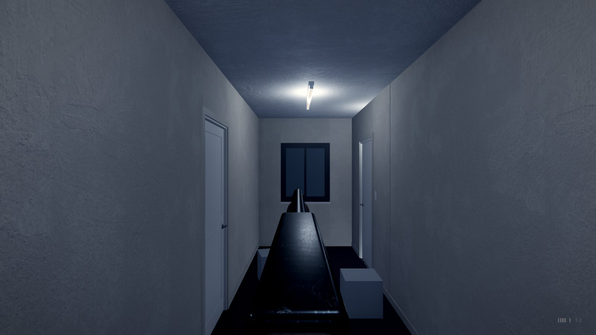
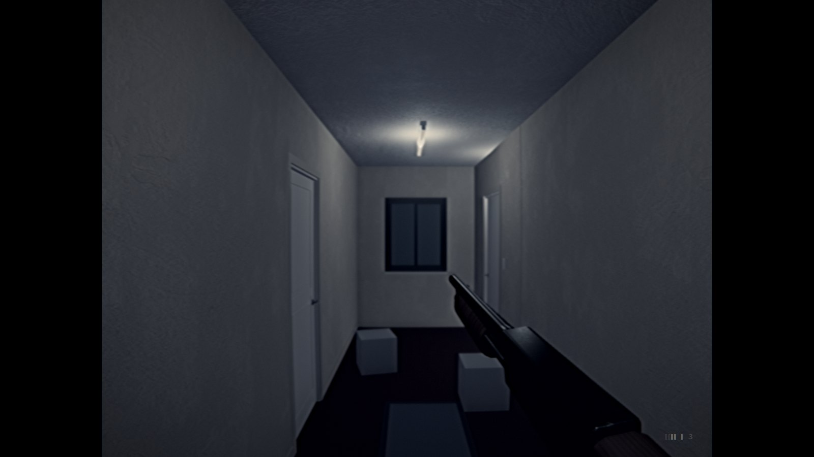
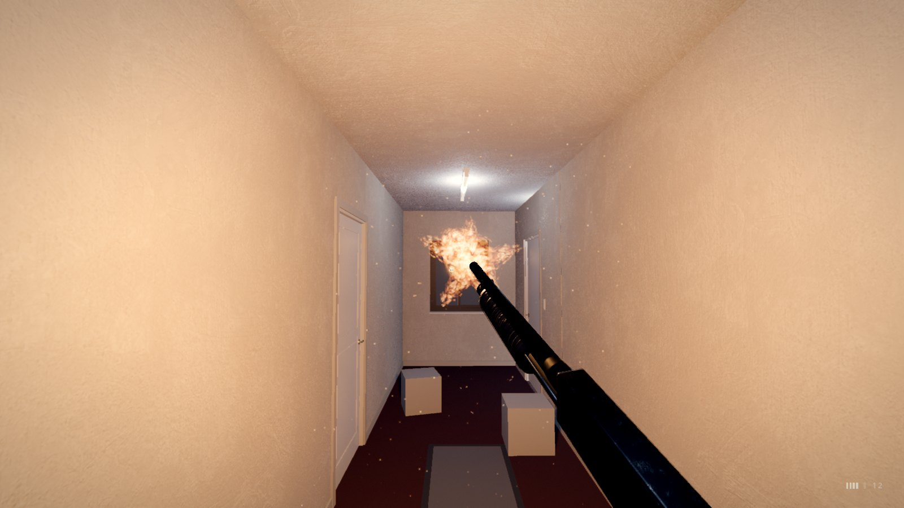
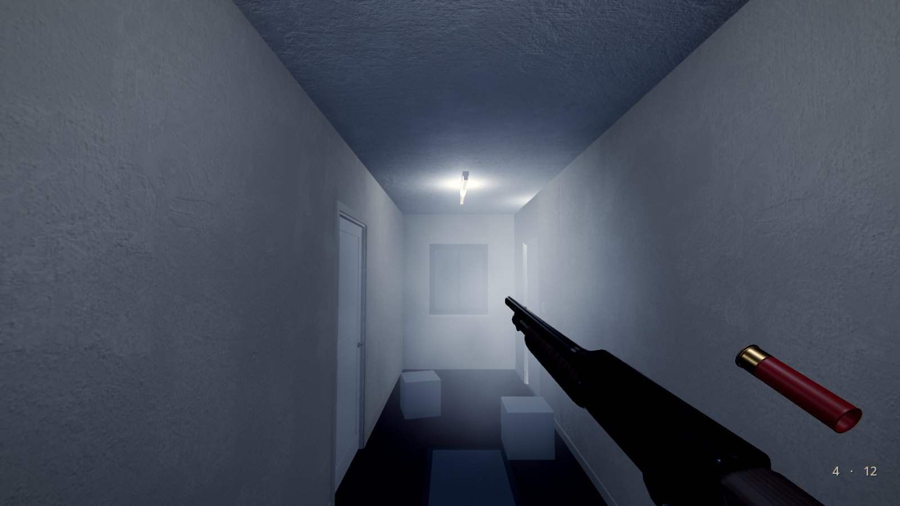
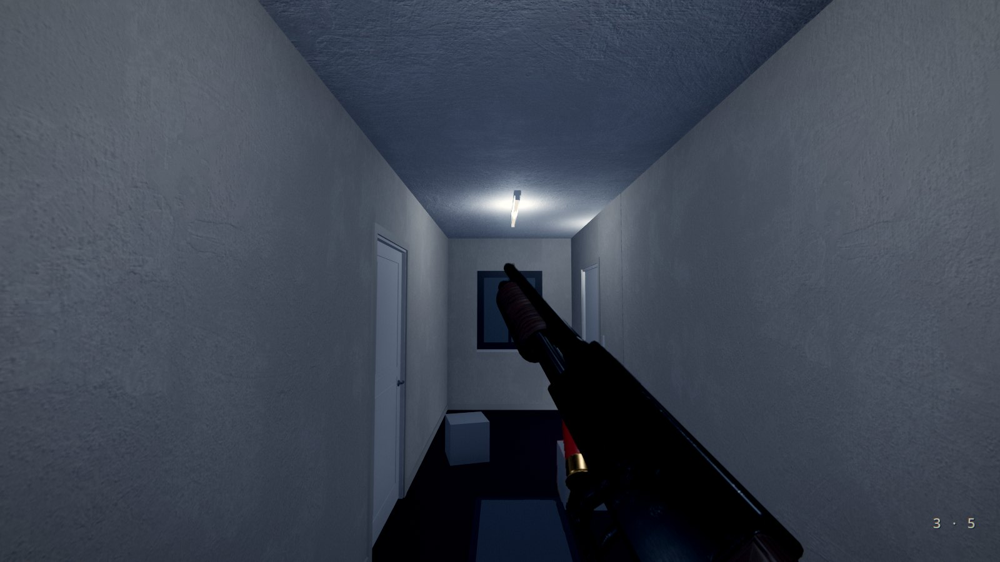
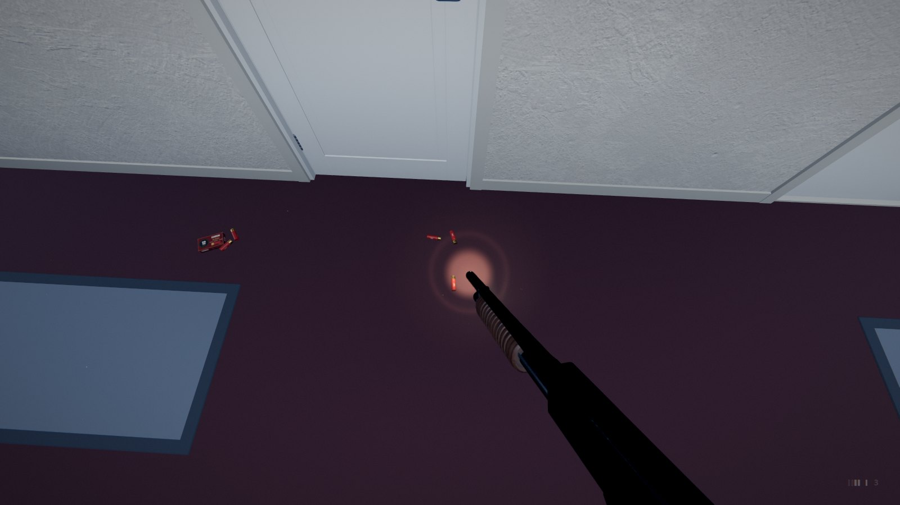

The HorrorStudio Weapons plugin
A pump-action shotgun held in first person, for a Godot game you build by hand: low on the right with its barrel on the middle of the view, fired with a click, racked by itself, reloaded a shell at a time through its loading port, lowered and raised, found lying in a room. No hands on it. Made for horror: one heavy, slow gun, every shell counted.
1What it is
One add-on, addons/horrorstudio_weapons/, with nothing to build: HSShotgun (the gun
you carry) and HSWeaponPickup (the gun, or a box of shells, lying somewhere). The model is the
prop generator's shotgun_pump: its pump slides, the bolt's face leaves the ejection port while the action's
open, the trigger moves, and its sockets (the muzzle, the ports, where a flashlight goes) tell the plugin where
everything is. The shells are shell_12ga and shell_12ga_spent; the sounds are made in code.

2Try it first
The plugin's own check builds a whole project to play: Tutorial v2's hotel floor at night, the starter's player with the shotgun and its flashlight, a box of shells on the carpet and two boxes to shoot. Keep it in a folder of your own and open it in Godot:
python tools/godot/weapons_check.py --keep ~/Games/ShotgunRange godot ~/Games/ShotgunRange/project.godot # then F5
(From the project folder, as the other guides' commands. It plays itself through once headless first, the check, and
says WEAPONS ok.)
Click into the window to take the mouse, then Left click, Right button, R, Q, E on the box. It's the same project the pictures here come from.
3Putting it in a project
A new project made by tools/godot_byhand.py has it already, enabled, beside the Look and UI plugins and the
starter kit:
python tools/godot_byhand.py new ~/Games/MyGame python tools/godot_byhand.py install ~/Games/MyGame # a project you have: the plugins again, the starter left alone
In Project › Project Settings › Plugins it's HorrorStudio Weapons.
4The shotgun under the camera
- Open your player (the starter's
player.tscn, or your own) and select its camera, Eye. - Add Child Node, type
HSShotgun. The gun appears in the editor where it'll be held (a preview: nothing of it is saved). - Set Light to the flashlight (Eye/Flashlight): while the gun is up the flashlight is carried under its barrel, its beam along the bore; lowered, it's back where it was.
- Tune the hold in the Inspector and watch the preview move: Hold (where the chamber sits from the eye, in metres), Aim At M (where the barrel's line crosses the middle of the view), Cant Deg (leaned in).
- Not carried from the start? Untick Owned and put a pickup where it lies (section 6).


5Playing it
| Left click | fire: nine pellets in a narrow cone from the middle of the view. Then the pump is racked by itself: the spent hull thrown out of the ejection port to the right and onto the floor, the next shell in. |
| Right button | held: aimed, the barrel straight ahead under your eye, the lens a little narrower, the cone tighter, the sway calmer. |
| R | reload a shell at a time (section 5). A click while reloading stops it after the shell going in, and the gun fires as soon as it can. |
| Q | lower it out of view, and raise it again. |
| Shift | running (the starter's), it's carried low and turned in; it comes up again as you aim, shoot or reload. |
| E | take a pickup (the starter's player). |


Each pellet leaves a hole where it lands (on a door it swings with it, on a box it goes with the box), knocks dust off
the wall, pushes what can move, and tells what it hit if that has a shot(info) method. A shot is loud:
every listener hears it (the starter's searcher comes for it) and your ears ring for a moment (the Fear node).
The shells show low on the right as marks, the tube's four and the chamber's (filled where there's a shell), and the
pocket's count: faint at rest, clear for a moment when they change.
6The reload
Like a shotgun: the gun is turned to bare its loading port underneath, and each shell rises from under the gun, its nose into the port, levels on the tube's line and is pushed in until it clicks past the latch, one after another until the tube is full or your pocket is empty. If the chamber was empty, the pump is racked at the end.


7Found in a room, and shot at
Add a Node3D, give it pickup.gd (or add an HSWeaponPickup), and set its Kind:
shotgun
The gun lying on its side. Taken with E, the player's HSShotgun (its Owned unticked) is carried from then on and drawn up into view; Shells come with it into the pocket.
shells
A box of shells: Shells of them into the pocket, with a rattle.
Say is a line the Story shows when it's taken; the taken signal is there to wire a scare to.
Something to shoot at
Put an HSShootable under a character (or a doll, a lamp): a shot that lands on it is a hit.
Hits is how many it takes to bring it down; each hit can make it gone for a few seconds (vanished, its
collision with it, then back: a ghost doesn't die), push it back, play a cry, say a line, or
fire a target (a scare area, a cue, the lights). Down, a gone one is gone for good. Its hit and
down signals are there for anything else: your own scripts, an animation, the story moving on.
8In your own scripts
$Player/Eye/Shotgun.fired.connect(func(hits): print(hits.size(), " pellets hit"))
$Player/Eye/Shotgun.shell_in.connect(func(n): print(n, " in the tube"))
$Player/Eye/Shotgun.give(4) # the gun, and four shells with it
$Player/Eye/Shotgun.add_shells(5) # a box picked up
$Player/Eye/Shotgun.set_raised(false) # lowered for a cutscene
# on something that can be shot (it, or a node above what the pellet hit):
func shot(info: Dictionary) -> void: # {point, normal, dir, from, pellet}
hp -= 1
Signals: fired(hits), racked(spent), shell_in(loaded), empty,
raised_changed(up). State: loaded, chambered, spare, capacity,
aiming, reloading. Methods: pull(), rack(), reload(),
set_aim(on), set_raised(up), give(shells), add_shells(n). On an
HSShootable: hit(info), down, count, is_down.
9The numbers
- The shot: nine pellets in a cone of 2.6° (23 cm across at 5 m), 45 m reach; the view kicked 3.2° and settling back 60% of it; heard as loud as three runs.
- The pump: a shot every 0.53 s at most, under two a second: under the flash limit's three.
- The reload: about half a second a shell.
- The pocket: four shells to start with (Spare), four in the tube and one in the chamber.
Every one of these is an export on the node: change it in the Inspector.
10Good to know
- Fewer flashes: lower Flash Energy (1.5: a glow, not a flash) for players who need it.
- A click never fires while the mouse is free (a menu open, or the click that takes the mouse back).
- Against a wall the gun is still drawn whole, its muzzle past the wall: the flash lights your side and the smoke stays with you; a hull thrown into a wall beside you comes down on your side.
- The hulls fall by rays of their own, not as physics bodies: something that small would sink through a level's thin floor. The last 16 stay.
- No crosshair of its own: the HUD's dot (HorrorStudio UI) is the middle of the cone.